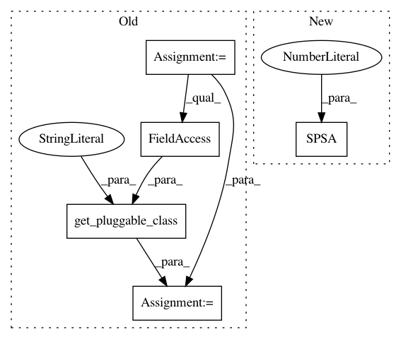

bd12ec54e6b360019c83311c8cc685c252e306d8,test/test_qsvm_variational.py,TestQSVMVariational,test_qsvm_variational_directly,#TestQSVMVariational#,61
Before Change
def test_qsvm_variational_directly(self):
np.random.seed(self.random_seed)
svm = get_pluggable_class(PluggableType.ALGORITHM,"QSVM.Variational")
svm = svm()
svm.random_seed = self.random_seed
svm.setup_quantum_backend(backend="qasm_simulator", shots=1024)
After Change
backend = Aer.get_backend("qasm_simulator")
num_qubits = 2
optimizer = SPSA(max_trials=10, c0=4.0, skip_calibration=True)
optimizer.set_options(save_steps=1)
feature_map = SecondOrderExpansion(num_qubits=num_qubits, depth=2)
var_form = RYRZ(num_qubits=num_qubits, depth=3)
In pattern: SUPERPATTERN
Frequency: 3
Non-data size: 5
Instances
Project Name: Qiskit/qiskit-aqua
Commit Name: bd12ec54e6b360019c83311c8cc685c252e306d8
Time: 2018-11-19
Author: chenrich@us.ibm.com
File Name: test/test_qsvm_variational.py
Class Name: TestQSVMVariational
Method Name: test_qsvm_variational_directly
Project Name: Qiskit/qiskit-aqua
Commit Name: 602c2de3f528a95a7c1cc785f608e3e93fd8e404
Time: 2018-11-20
Author: chenrich@us.ibm.com
File Name: test/test_vqe2iqpe.py
Class Name: TestVQE2IQPE
Method Name: test_vqe_2_iqpe
Project Name: Qiskit/qiskit-aqua
Commit Name: 602c2de3f528a95a7c1cc785f608e3e93fd8e404
Time: 2018-11-20
Author: chenrich@us.ibm.com
File Name: test/test_optimizers.py
Class Name: TestOptimizers
Method Name: test_spsa